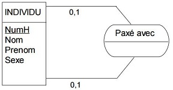

Analyse & Conception de données
Dictionnaire de données
Un dictionnaire de données permet de répertorier les informations constituant l'application en données indivisibles. Ces dernières sont nommées, décrites, typées et regroupées en entités. Y figurent également les contraintes et certaines règles de calcul.
Modèle Conceptuel de données (MCD)
Le MCD est un schéma représentant l'ensemble des données ordonnées en entité constituée d'attributs, caractérisée par une référence unique et mise en relation avec les autres entités. Ces relations peuvent s'illustrer par des verbes, voire des attributs et se lisent par le biais de cardinalités.
Modèle Physique de données (MPD)
Le MPD est le schéma résultant du MCD suite à l'application des règles suivantes :
- Les références uniques se transforment en clés primaires et d'autres contraintes telles que la nullabilité et l'auto-incrément peuvent y figurer.
- Pour les relations many to one, la clé primaire de l'entité forte (many) est reportée dans l'entité faible (one) sous forme de clé étrangère. Les attributs de la relation se reportent également dans l'entité faible.
- Les relations many to many, se traduisent par la création d'une table d'association. Sa clé primaire est la concaténation des clés étrangères la reliant aux entités d'origines. Elle reprend les attributs de la relation.
Cardinalités
Les cardinalités permettent de définir quels types de relation relient les entités. Une cardinalité est symbolisée par deux particules, une déterminant le minimum, l'autre le maximum :
Les valeurs des cardinalités sont :
Pour la particule gauche :
- Il peut ne pas en avoir (0)
- Il doit y en avoir au moins un (1)
Pour la particule droite :
- Il y en a un maximum (1)
- Il peut y en avoir plusieurs (n)
Entité
Regroupement d'informations qui composent et caractérisent l'entité. Ses informations sont nommés attributs/champs.
Entité d'association
Une entité d'association est une entité issue d'une relation de type 'many to many' ou n-n. Elle héritera donc de toutes les références uniques des tables reliées et l'ensemble de ces clés constitueront une clé primaire.
Relation
Une relation établit un lien entre une ou plusieurs entités. Elle peut être caractérisée par un verbe d'état et/ou d'un ou plusieurs attributs.
Relations ou Entités?
Dans la conception du MCD, il arrive de se demander si un élément doit être matérialisé en une relation ou une entité. En l'absence de clé unique qui définit l'entité, le choix doit être porté vers une relation. Le cas contraire, on choisira une entité.
Relation réflexive
Dans une relation reflexive, une nouvelle entité se détache de la première tout en restant comprise; en somme elle est mise en relation avec elle-même. Ainsi, la clé primaire de l'entité d'origine est également clé étrangère et sert de clé primaire à l'entité issue de la relation récursive.

Par exemple, pour une entité Individu, une deuxième entité relative au conjoint peut être distinguée. Ce dernier est un élément d'Individu qui est en relation avec une autre élément d'Individu
Attributs
Les attributs sont indivisibles, typés, soumis à des contraintes et à des règles de calcul.
Ils comportent un code et une description.
Clé Primaire
Une clé primaire est la donnée qui permet d'identifier de manière unique un enregistrement dans une entité.
Clé Étrangère
Une clé étrangère, dans une base de données relationnelle, est une contrainte qui garantit l'intégrité référentielle entre deux tables. Elle établit le lien entre deux tables en étant liée à la clé primaire d'une autre table.